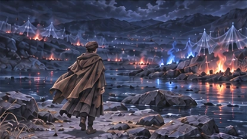
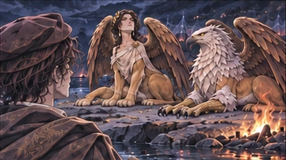
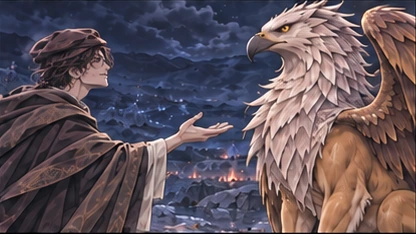
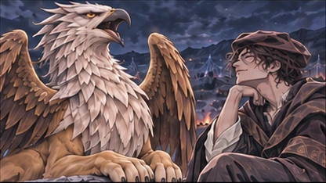
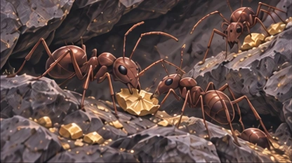
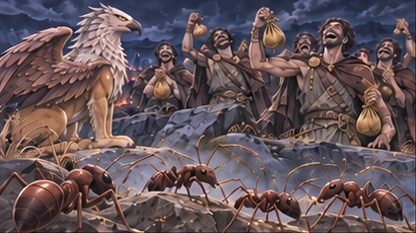
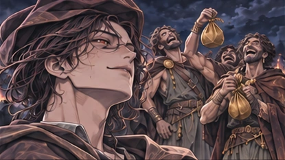
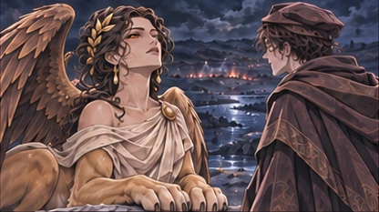

2-5막 · 페네이오스강 상류
한국어 번역은 독일어 원문에 대응하는 자동 번역 초안입니다.

독일어 원문 · 한국어 번역
Am oberen Peneios
MEPHISTOPHELES:
Und wie ich diese Feuerchen durchschweife,
So find' ich mich doch ganz und gar entfremdet,
Fast alles nackt, nur hie und da behemdet:페네이오스 상부에는 메피스토펠레스: 그리고 내가 이 작은 불길 사이를 헤매는 동안, 그래서 나는 완전히 소외감을 느꼈다. 거의 모든 것이 벌거벗었고, 여기저기서 셔츠만 입었습니다.

독일어 원문 · 한국어 번역
Die Sphinxe schamlos, unverschämt die Greife,
Und was nicht alles, lockig und beflügelt,
Von vorn und hinten sich im Auge spiegelt...
Zwar sind auch wir von Herzen unanständig,뻔뻔한 스핑크스, 뻔뻔한 그리핀, 그리고 곱슬곱슬하고 날개 달린 것이 전부는 아니지만, 앞뒤로 눈에 비쳐지네요... 우리도 마음은 무례하지만
독일어 원문 · 한국어 번역
Doch das Antike find' ich zu lebendig;
Das müßte man mit neustem Sinn bemeistern
Und mannigfaltig modisch überkleistern...
Ein widrig Volk! Doch darf mich's nicht verdrießen,그러나 나는 고대의 것들이 너무 생생하다고 생각합니다. 이건 최신 감각으로 마스터해야 해 그리고 그 위에 다양하고 패셔너블한 방법으로 붙여보세요... 불쾌한 사람들! 하지만 그것이 나를 화나게 해서는 안 된다.

독일어 원문 · 한국어 번역
Als neuer Gast anständig sie zu grüßen...
Glüchzu den schönen Fraun, den klugen Greisen!
GREIF:
Nicht Greisen! Greifen!--Niemand hört es gern,
Daß man ihn Greis nennt. Jedem Worte klingt새로운 손님으로서 제대로 인사를... 아름다운 여성들과 현명한 노인들을 축하합니다! 그리핀: 노인이 아닙니다! 잡아!--아무도 듣고 싶어하지 않습니다. 그들은 그를 노인이라고 부릅니다. 모든 단어가 소리가 난다
독일어 원문 · 한국어 번역
Der Ursprung nach, wo es sich her bedingt:
Grau, grämlich, griesgram, greulich, Gräber, grimmig,
Etymologisch gleicherweise stimmig, +
Verstimmen uns.원산지, 출처: 회색빛, 심술궂은, 심술궂은, 흉측한, 무덤, 암울한, 어원적으로 동일하게 일관됨, + 우리를 화나게 했어요.

독일어 원문 · 한국어 번역
MEPHISTOPHELES:
Und doch, nicht abzuschweifen,
Gefäallt das Grei im Ehrentitel Greifen.
GREIF:
Natürlich! Die Verwandtschaft ist erprobt,
Zwar oft gescholten, mehr jedoch gelobt;메피스토펠레스: 그럼에도 불구하고, 벗어나지 말고, 노인은 그리핀이라는 명예 칭호를 좋아한다. 그리핀: 물론이죠! 친족 관계가 시도되고, 종종 비판을 받았지만 더 칭찬을 받았습니다.

독일어 원문 · 한국어 번역
Man greife nun nach Mädchen, Kronen, Gold,
Dem Greifenden ist meist Fortuna hold.
AMEISEN:
Ihr sprecht von Gold, wir hatten viel gesammelt,
In Fels- und Höhlen heimlich eingerammelt;이제 당신은 소녀들, 왕관, 금, 행운은 대개 그것을 잡는 사람에게 유리합니다. 개미: 당신은 금에 대해 이야기하고 우리는 많이 모았습니다. 바위와 동굴에 비밀리에 밀집되어 있습니다.

독일어 원문 · 한국어 번역
Das Arimaspen-Volk hat's ausgespürt,
Sie lachen dort, wie weit sie's weggeführt.
GREIFE:
Wir wollen sie schon zum Geständnis bringen.
ARIMASPEN:
Nur nicht zur freien Jubelnacht.아리마스펜 사람들은 그것을 감지했고, 그들은 그것이 자신들을 얼마나 멀리 데려왔는지 비웃습니다. 그리핀: 우리는 그녀에게 고백을 받고 싶습니다. 아리마스펜: 무료 희년의 밤이 아닙니다.

독일어 원문 · 한국어 번역
Bis morgen ist's alles durchgebracht,
Es wird uns diesmal wohl gelingen.
MEPHISTOPHELES:
Wie leicht und gern ich mich hierher gewöhne,
Denn ich verstehe Mann für Mann.내일까지 모든 것이 완료될 예정입니다. 이번에는 아마 성공할 거예요. 메피스토펠레스: 나는 여기에 있는 것이 얼마나 쉽고 행복하게 익숙해졌는지, 왜냐하면 나는 사람 대 사람을 이해하기 때문입니다.

독일어 원문 · 한국어 번역
SPHINX:
Wir hauchen unsre Geistertöne,
Und ihr verkörpert sie alsdann.
Jetzt nenne dich, bis wir dich weiter kennen.
MEPHISTOPHELES:
Mit vielen Namen glaubt man mich zu nennen--스핑크스: 우리는 유령의 소리를 들이마시는데, 그리고 당신은 그것을 구현합니다. 이제 우리가 당신을 더 잘 알게 될 때까지 이름을 지어보세요. 메피스토펠레스: 사람들은 나를 여러 가지 이름으로 부르는 것 같아요.
독일어 원문 · 한국어 번역
Sind Briten hier? Sie reisen sonst so viel,
Schlachtfeldern nachzuspüren, Wasserfällen,
Gestürzten Mauern, klassisch dumpfen Stellen;
Das wäre hier für sie ein würdig Ziel.여기 영국인이 있나요? 평소에 여행을 많이 다니시잖아요 전장, 폭포를 추적하기 위해 무너진 벽, 고전적인 둔한 지점; 그것은 여기에서 그들에게 가치 있는 목표가 될 것입니다.
독일어 원문 · 한국어 번역
Sie zeugten auch: Im alten Bühnenspiel
Sah man mich dort als old Iniquity.
SPINX:
Wie kam man drauf? +
MEPHISTOPHELES:
Ich weiß es selbst nicht wie.그들은 또한 출산했다: 옛날 무대 연극에서 사람들은 그곳에서 나를 늙은 죄악으로 보았습니다. 스핀스: 어떻게 그런 생각을 하게 됐나요? + 메피스토펠레스: 나는 나 자신을 모른다.
독일어 원문 · 한국어 번역
SPINX:
Mag sein! Hast du von Sternen einige Kunde?
Was sagst du zu der gegenwärt'gen Stunde?
MEPHISTOPHELES:
Stern schießt nach Stern, beschnittner Mond scheint helle,
Und mir ist wohl an dieser trauten Stelle,스핀스: 아마! 별에 대한 지식이 있나요? 현재 시간에 대해 무엇을 말합니까? 메피스토펠레스: 별은 별을 따라 쏘고, 할례받은 달은 밝게 빛나고, 그리고 익숙한 이 곳에서 편안함을 느끼며,
독일어 원문 · 한국어 번역
Ich wärme mich an deinem Löwenfelle.
Hinauf sich zu versteigen, wär' zum Schaden;
Gib Rätsel auf, gib allenfalls Scharaden.
SPINX:
Sprich nur dich selbst aus, wird schon Rätsel sein.나는 당신의 사자 가죽으로 몸을 따뜻하게합니다. 올라가는 것은 해를 끼치는 것입니다. 수수께끼를 내세요. 어쩌면 뻔뻔한 행동을 하기도 합니다. 스핀스: 직접 말하면 미스터리가 될 것입니다.
독일어 원문 · 한국어 번역
Versuch einmal, dich innigst aufzulösen:
"Dem frommen Manne nötig wie dem bösen,
Dem ein Plastron, aszetisch zu rapieren,
Kumpan dem andern, Tolles zu vollführen,자신을 깊이 해결해 보세요. "경건한 사람에게도 필요하고 악한 사람에게도 필요하며 금욕적으로 랩을 해줄 플라스트론, 위대한 일을 성취하기 위해 서로 협력하는 동지,
독일어 원문 · 한국어 번역
Und beides nur, um Zeus zu amüsieren."
ERSTER GREIF:
Den mag ich nicht! +
ZWEITER GREIF:
Was will uns der?
BEIDE:
Der Garstige gehöret nicht hierher!그리고 둘 다 단지 제우스를 즐겁게 하기 위한 것뿐이죠." 첫 번째 그리핀: 나는 그것을 좋아하지 않는다! + 두 번째 그리핀: 그 사람은 우리에게 무엇을 원하는 걸까요? 둘 다: 그 못된 놈은 여기에 속하지 않아!
독일어 원문 · 한국어 번역
MEPHISTOPHELES:
Du glaubst vielleicht, des Gastes Nägel krauen
Nicht auch so gut wie deine scharfen Klauen?
Versuch's einmal! +
SPINX:
Du magst nur immer bleiben,메피스토펠레스: 손님의 손톱을 뽑고 있다고 생각할 수도 있습니다. 날카로운 발톱만큼 좋지 않나요? 한 번 시도해 보세요! + 스핀스: 당신은 영원히 머물고 싶어합니다.
독일어 원문 · 한국어 번역
Wird dich's doch selbst aus unsrer Mitte treiben;
In deinem Lande tust dir was zugute,
Doch, irr' ich nicht, hier ist dir schlecht zumute.
MEPHISTOPHELES:
Du bist recht appetitlich oben anzuschauen,그것이 너를 우리 가운데서 몰아낼 것이다. 당신의 나라에서 뭔가 도움이 될 것입니다. 예, 제 말이 틀리지 않았습니다. 여기서 기분이 안 좋으신 것 같습니다. 메피스토펠레스: 위층에서 보면 꽤 먹음직스럽네요.
독일어 원문 · 한국어 번역
Doch unten hin die Bestie macht mir Grauen.
SPINX:
Du Falscher kommst zu deiner bittern Buße,
Denn unsre Tatzen sind gesund;
Dir mit verschrumpftem Pferdefuße하지만 아래에서는 그 짐승이 나를 겁나게 합니다. 스핀스: 거짓된 자여, 쓰라린 참회를 당하고 우리의 발은 건강합니다. 말발이 쪼그라든 너
독일어 원문 · 한국어 번역
Behagt es nicht in unserem Bund.
MEPHISTOPHELES:
Wer sind die Vögel, in den ästen
Des Pappelstromes hingewiegt?
SPINX:
Gewahrt euch nur! Die Allerbesten우리 노조에서 편안함을 느끼지 마십시오. 메피스토펠레스: 나뭇가지에 있는 새들은 누구인가요? 포플러 개울에 흔들렸나요? 스핀스: 조심하세요! 최고의
독일어 원문 · 한국어 번역
Hat solch ein Singsang schon besiegt.
SIRENEN:
Ach was wollt ihr euch verwöhnen
In dem Häßlich-Wunderbaren!
Horcht, wir kommen hier zu Scharen그런 노래는 이미 이겼습니다. 사이렌: 아, 뭘 망치고 싶니? 추악하고 훌륭합니다! 들어봐, 우리는 떼를 지어 여기로 오고 있어
독일어 원문 · 한국어 번역
Und in wohlgestimmten Tönen;
So geziemet es Sirenen.
SPINXE:
Nötigt sie, herabzusteigen!
Sie verbergen in den Zweigen그리고 잘 조율된 톤으로; 사이렌에 어울리는군요. 스핑크스: 강제로 하강시키세요! 그들은 나뭇가지에 숨어 있어요
독일어 원문 · 한국어 번역
Ihre garstigen Habichtskrallen,
Euch verderblich anzufallen,
Wenn ihr euer Ohr verleiht.
SIRENEN:
Weg das Hassen! weg das Neiden!당신의 불쾌한 매 발톱, 당신에게 치명적인, 귀를 빌려준다면. 사이렌: 증오를 멀리하십시오! 부러워하지 마세요!
독일어 원문 · 한국어 번역
Sammeln wir die klarsten Freuden,
Unterm Himmel ausgestreut!
Auf dem Wasser, auf der Erde
Sei's die heiterste Gebärde,가장 맑은 기쁨을 모아보자 하늘 아래 흩어져 있어요! 물 위에서, 땅 위에서 가장 기분 좋은 몸짓이건,
독일어 원문 · 한국어 번역
Die man dem Willkommnen beut.
MEPHISTOPHELES:
Das sind die saubern Neuigkeiten,
Wo aus der Kehle, von den Saiten
Ein Ton sich um den andern flicht.어느 것이 환영을 바칩니다. 메피스토펠레스: 깨끗한 소식이네요 목구멍에서, 현에서 어디에서 한 톤이 다른 톤을 엮어냅니다.
독일어 원문 · 한국어 번역
Das Trallern ist bei mir verloren:
Es krabbelt wohl mir um die Ohren,
Allein zum Herzen dringt es nicht.
SPINXE:
Sprich nicht vom Herzen! das ist eitel;지저귀는 소리가 나에게 사라졌습니다. 아마도 내 귀 주변을 기어다니는 것 같군요. 다만 마음에 닿지 않을 뿐입니다. 스핑크스: 마음에서 말하지 마십시오! 그것은 헛된 일입니다.
독일어 원문 · 한국어 번역
Ein lederner verschrumpfter Beutel,
Das paßt dir eher zu Gesicht.
FAUST:
Wie wunderbar! das Anschaun tut mir Gnüge,
Im Widerwärtigen große, tüchtige Züge.가죽이 줄어든 가방, 그게 당신에게 더 잘 어울리네요. 파우스트: 정말 훌륭해요! 그 광경은 나에게 만족감을 준다. 역겨운 크고 유능한 기능.
독일어 원문 · 한국어 번역
Ich ahne schon ein günstiges Geschick;
Wohin versetzt mich dieser ernste Blick?
Vor solchen hat einst ödipus gestanden;
Vor solchen krümmte sich Ulyß in hänfnen Banden;나는 이미 좋은 운명을 느꼈다. 이 진지한 표정이 나를 어디로 데려가나요? 한때 오이디푸스는 그런 사람들 앞에 섰습니다. 율리시스는 그런 사람들 앞에서 반으로 몸부림쳤습니다.
독일어 원문 · 한국어 번역
Von solchen ward der höchste Schatz gespart,
Von diesen treu und ohne Fehl bewahrt.
Vom frischen Geiste fühl' ich mich durchdrungen;
Gestalten groß, groß die Erinnerungen.그런 사람들이 최고의 보물을 지켜냈고, 그들에 의해 충실하고 흠 없이 보존되었습니다. 나는 신선한 정신에 스며드는 느낌을 받습니다. 크고 큰 추억을 만드세요.
독일어 원문 · 한국어 번역
MEPHISTOPHELES:
Sonst hättest du dergleichen weggeflucht,
Doch jetzo scheint es dir zu frommen;
Denn wo man die Geliebte sucht,
Sind Ungeheuer selbst willkommen.메피스토펠레스: 그렇지 않으면 너희가 이런 것들을 저주하였을 것이니라 그러나 지금은 그것이 당신에게 경건한 것처럼 보입니다. 사랑하는 사람을 찾는 곳이니까 괴물 자체는 환영받습니다.
독일어 원문 · 한국어 번역
FAUST:
Ihr Frauenbilder müßt mir Rede stehn:
Hat eins der Euren Helena gesehn?
SPHINXE:
Wir reichen nicht hinauf zu ihren Tagen,
Die letztesten hat Herkules erschlagen.파우스트: 당신의 여성 이미지가 나에게 말해야 합니다: 헬레나를 본 사람 있나요? 스핑크스: 우리는 그들의 날에 이르지 못하며 헤라클레스는 마지막 사람을 죽였습니다.
독일어 원문 · 한국어 번역
Von Chiron könntest du's erfragen;
Der sprengt herum in dieser Geisternacht;
Wenn er dir steht, so hast du's weit gebracht.
SIRENEN:
Sollte dir's doch auch nicht fehlen!...Chiron에게 물어볼 수도 있습니다. 그는 이 유령 같은 밤에 뛰어다니고 있습니다. 그것이 당신에게 적합하다면, 당신은 먼 길을 왔습니다. 사이렌: 여러분도 놓치지 마세요!...
독일어 원문 · 한국어 번역
Wie Ulyß bei uns verweilte,
Schmähend nicht vorübereilte,
Wußt' er vieles zu erzählen;
Würden alles dir vertrauen,Ulyss가 어떻게 우리와 함께 있었는지, 모욕적으로 서두르지 않았습니다. 그는 말할 것이 많았습니다. 모두가 당신을 믿을까요?
독일어 원문 · 한국어 번역
Wolltest du zu unsern Gauen
Dich ans grüne Meer verfügen.
SPHINX:
Laß dich, Elder, nicht betrügen.
Statt daß Ulyß sich binden ließ,우리 지역을 방문하고 싶었나요? 푸른 바다에 접근할 수 있습니다. 스핑크스: 속지 마십시오, 장로님. 율리스가 자신을 속박하는 대신,
독일어 원문 · 한국어 번역
Laß unsern guten Rat dich binden;
Kannst du den hohen Chiron finden,
Erfährst du, was ich dir verhieß.
MEPHISTOPHELES:
Was krächzt vorbei mit Flügelschlag?우리의 좋은 조언이 당신을 묶도록 하십시오. 높은 키론을 찾을 수 있나요? 내가 무슨 약속을 했는지 알아보세요. 메피스토펠레스: 날개를 퍼덕이며 삐걱거리며 지나가는 것은 무엇입니까?
독일어 원문 · 한국어 번역
So schnell, daß man's nicht sehen mag,
Und immer eins dem andern nach,
Den Jäger würden sie ermüden.
SPHINX:
Dem Sturm des Winterwinds vergleichbar,너무 빨라서 눈에 띄지 않을 정도, 그리고 항상 차례로, 그들은 사냥꾼을 지치게 할 것입니다. 스핑크스: 겨울바람의 폭풍우와 비교하면,
독일어 원문 · 한국어 번역
Alcides' Pfeilen kaum erreichbar;
Es sind die raschen Stymphaliden,
Und wohlgemeint ihr Krächzegruß,
Mit Geierschnabel und Gänsefuß.Alcides의 화살로는 거의 접근할 수 없습니다. 그들은 재빠른 스팀팔리드이다. 그리고 그녀의 개굴거리는 인사말은 좋은 의도로, 독수리 부리와 거위 발이 있습니다.
독일어 원문 · 한국어 번역
Sie möchten gern in unsern Kreisen
Als Stammverwandte sich erweisen.
MEPHISTOPHELES:
Noch andres Zeug zischt zwischen drein.
SPHINX:
Vor diesen sei Euch ja nicht bange!당신은 우리 서클에 참여하고 싶어합니다 가족 친척으로 밝혀졌습니다. 메피스토펠레스: 다른 것들은 세 사람 사이에서 쉿쉿거리고 있습니다. 스핑크스: 이것들을 두려워하지 마세요!
독일어 원문 · 한국어 번역
Es sind die Köpfe der lernäischen Schlange,
Vom Rumpf getrennt, und glauben was zu sein.
Doch sagt, was soll nur aus Euch werden?
Was für unruhige Gebärden?그들은 Lernaean 뱀의 머리입니다. 몸통에서 분리되어 당신이 무언가라고 믿습니다. 하지만 말해 보세요. 당신은 어떻게 될까요? 어떤 종류의 불안한 몸짓입니까?
독일어 원문 · 한국어 번역
Wo wollt Ihr hin? Begebt Euch fort!...
Ich sehe, jener Chorus dort
Macht Euch zum Wendehals. Bezwingt Euch nicht,
Geht hin! begrüßt manch reizendes Gesicht!어디로 가고 싶나요? 어서!... 저기 합창이 보이네 자신을 변절자로 만드십시오. 억지로 하지 마세요, 거기로 가세요! 많은 사랑스러운 얼굴을 환영합니다!
독일어 원문 · 한국어 번역
Die Lamien sind's, lustfeine Dirnen,
Mit Lächelmund und frechen Stirnen,
Wie sie dem Satyrvolk behagen;
Ein Bocksfuß darf dort alles wagen.그들은 라미아, 건장한 창녀들이다. 웃는 입술과 도톰한 이마로 그들이 사티로스 사람들을 얼마나 기쁘게 하는지; 염소는 그곳에서 무엇이든 감히 할 수 있습니다.
독일어 원문 · 한국어 번역
MEPHISTOPHELES:
Ihr bleibt doch hier? daß ich euch wiederfinde.
SPHINXE:
Ja! Mische dich zum luftigen Gesinde.
Wir, von ägypten her, sind längst gewohnt,
Daß unsereins in tausend Jahre thront.메피스토펠레스: 여기 머물고 있나요? 내가 당신을 다시 찾을 수 있도록. 스핑크스: 예! 통풍이 잘되는 군중에 합류하십시오. 우리는 이집트에서 오랫동안 익숙해졌습니다. 우리가 천년 동안 왕위에 오를 것이라.
독일어 원문 · 한국어 번역
Und respektiert nur unsre Lage,
So regeln wir die Mond- und Sonnentage.
Sitzen vor den Pyramiden,그리고 우리의 상황을 존중해주세요. 이것이 우리가 음력과 태양일을 조절하는 방법입니다. 피라미드 앞에 앉아서
독일어 원문 · 한국어 번역
Zu der Völker Hochgericht;
überschwemmung, Krieg und Frieden--
Und verziehen kein Gesicht.
인민고등법원에; 홍수, 전쟁, 그리고 평화-- 그리고 표정 짓지 마세요.